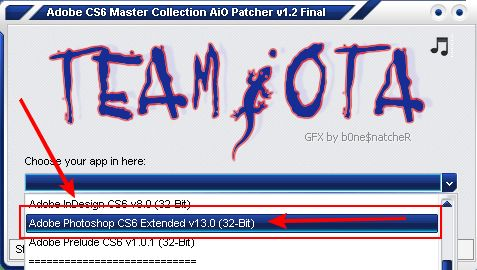
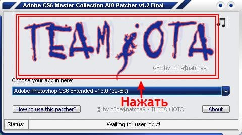
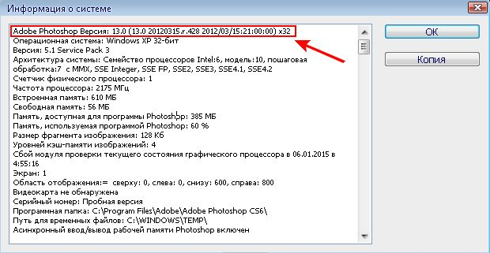

Cкорее всего не раз приходилось пользоваться какой либо программой которая распространяется на ограниченный период времени, Фотошоп cs6 не исключение по умолчанию он доступен на 30 дней. Причина триального периода многим скорее всего понятна, это развивать с продаж программное обеспечение и зарабатывать на этом. Но многим пользователям не представляется возможности покупать программы в виду различным тому причинам. По этому на вопрос как активировать фотошоп cs6 мы ответим в данной статье.
| Активация с помощью Активатора ↓ | Активация с помощью переноса файлов ↓ | |
Активация Photoshop CS6 с помощью Активатора
Для начала нам нужно скачать crack, то-есть активатор, без него у нас не получится крякнуть, пропатчить, хакнуть, взломать бесплатно фотошоп. Желательно проделывать данную операцию на скачанном же у нас Photoshop cs6 (проверено).
1. Скачать активатор ( пароль на архиве — 123) после открытия переносим или копируем файл Patch.exe в папку Adobe по пути(могут отличатся) C:\Program Files\Adobe то-есть файл должен быть рядом с папкой где установлена программа но не в самой папке.
{kind=link}
2. Запускаем активатор и выбираем пункт «Adode Photoshop cs6 Extended» (32bit) если у вас x64 то соответственно то же название только окончание (64bit) (подробнее про разрядность и где ее посмотреть в фотошопе будет написано ниже статьи)
 3. После выбора нажимаем на название TEAM i OTA.
{kind=link}
4. Успешным пропатчиванием будет служить надпись в поле Status.
{kind=link}
{kind=link}
Активация фотошопа выполнена, ваша программа бесплатно активирована и навсегда! Данный метод был протестирован на Windows 7 и Windows 10. Если вдруг c активатором у вас возникли проблемы или вам сложно, второй метод активации находится ниже, попробуйте его.
Важно!! Если не чего с патчем не получается то-есть в поле статус не чего подобного как на скринах выше нет то попробуйте все в том же расположении Patch.exe запустить с правами администратора или снизить уровень до минимума контроля учетных записей, и снова проделать все шаги!
Активация Photoshop CS6 с помощью Файлов Amtlib.dll
1. Данный метод активации простой, необходимо из архива перенести файл Amtlib.dll в папку с установленной программой.
2. При переносе файла в папку на диске C вам нужны будут права администратора, убедитесь что вы их имеете.
3. Файлы имеют разную разрядность как и устанавливаемый Adobe Photoshop CS6, заменяйте файл именно исходя из битности программы.
4. Замените файл в папке назначения.
Если у вас не получается что либо или вам не понятно, посмотрите наглядное видео в начале данной страницы.
| Amtlib.dll x32 для CS6 | Amtlib.dll x64 для CS6 |
 |
 |
Способы активации были протестированы с официальным — «Adobe Photoshop cs6» который в свою очередь можно скачать перейдя по ссылке! Если у вас происходят трудности в установке и у вас не получилось активировать данным патчем то рекомендуем скачать активированную версию.
Совет!! Чтоб понять наверняка какая у вас версия разрядности фотошопа (x32 или x64) сделайте следующее:
Откройте программу фотошоп, зайдите в Справка->Информация о системе первая строчка выдаст нужную информации.

Ребята, честь Вам и огромная похвала, жаль. что у Вас на сайте только 5 пальцев ?! СПАСИБО !!!
Все установила. Спасибо. Но когда захожу в фотошоп, все равно пишет, что это пробный период. Что делать?
проверьте правильность инструкции по активации, такого быть не должно!
Отлично, огромное спасибо!!!! Надеюсь будет работать всегда!!!)))))))
На стадии патча после определения 32 битной системы выбивает ошибку 32 ни администрация ни контроль не действуют, а еще небыло 30 дневной установки испытательного срока в начале активации
Увы, шаг в шаг все сделала. Крак не находит файл. Ни на х32, ни на х64…
Версия наверное другая, пробуйте установите версию официальную с этого сайта, или там в папке есть dll файл перенесите их в папку с программой должно помочь.
Отличная программа у меня оперативная память нормальная очень хорошо тянет , лагов нету , русский язык очень хорошо одобряю
Всё запустил, пишет что всё установлено, но когда я открываю фотошоп пишет «Ошибка 0″ А при запуске от имени администратора вылезает ошибка
перекачайте файл
Что делать, если Адоб ID уже есть?
ввести его, или можно придумать новый.
Ребят, у меня такая тема…когда я запускал на установщик тот у меня он открывается и пишет «подождите» я сидел ждал 2 часа но бестолку….что делать?! Помоги пожалуйста!
запустить нужно через некоторое время снова 15-20 мин
нет, уже все ок !!! Оказалось надо было просто закрыть открытый фотошоп .Спасибо! Надеюсь будет все функционировать хорошо!
Выйдите с программы у меня тоже такую ошибку давали , вышел с программы и все получилось
I/O error 32!
Что это значит и как с этим бороться?
Спасибо! Все работает, но если кто-то как и я с установками совсем не дружит.. то… Patch копировать нужно не тот который скачивается, а тот который открываете, после запуска скачанного…
не чего не понял но очень интересно.
Установила все. и кряк запустила. вроде все хорошо. и значки есть НО при нажатии ничего не происходит. то есть сама программа фотошопа не запускается. в чем может быть причина?
программа не скачана с нашего сайта
А как поступать если патч открывается а на нем не выходит кнопки активизации, заранее спасибо
как понять, непонятно
не могу крякнуть , пишет File not found! Make sure that you installed the app in the standard subfolder»
что делать?
смотрим инструкцию внимательно или вторую инструкцию
Отлично) все установилось, активировалось! СПАСИБО огромное!!))))
СПАСИБО!
Раскрыть архив комментариев (вопросы-ответы)
Спасибо вам, но вот только взломать не могу, почему не знаю!
Такое дело, размер окон вроде навигатора, слоев и т.д. слишком большой, при этом сделать их меньше не выходит, а они так занимают очень много места.
Админы Доброго! может вы выложите варианты ключей для cs6, как для предыдущих версий выкладывали? Спасибо
ЦЕЛУЮ ВАШИ ЗОЛОТЫЕ РУКИ
здравствуйте! не получается сохранить патч в указанную папку. система пишет об отсутствии каких-то прав администратора сети.. предлагается только сохранить в других папках. что делать?
не могу крякнуть , пишет File not found! Make sure that you installed the app in the standard subfolder»
что делать?
Спасибо! Всё получилось!
Проделали великолепную работу! Спасибо большое за великую работу)))
все работает шикарно
На 64 бит винды 7 не получается установить, патч в нужной папке, File not found, что делать?
ищите папку
я не могу у меня не работает ни кряк ни сам фотошоп наверное слишком мало гигабайт
Спасибо большое за патч! Но есть одно НО!!! Он работает только с 32bit-разрядным фотошопом. Пробовал применить к 64bit-выдаёт «File not found! Make sure that you installed the app in the standard subfolder» Подскажите, как произвести распаковку к 64bit системе фотошоп? Заранее признателен. С ув. Юра. P.S.: А пока ставлю 5/5!!!
Первый раз все без головной боли, без вирусов, спасибо!
Неплохо, хотя адекватно оценить не могу.
КЛЁ-ВА…….!!!!!!!!!!!!!
нажимаю на тим и ота а фотошоп не пропатчуется в статусе file not found
Файл не найден, положите патч в папку /adobe/
Все работает, огромное спасибо!!!
Не могу найти второй способ(((
В конце видео ссылка
Все получилось! Спасибо огромное автору!!!
Сам фотошоп работает, а вот bridge нет, сообщение об ошибке и выходит из программы. Как исправить/запустить?
Активатором запускал на bridge, нет результатов.
Вероятно какие-то черти остались от предыдущей установки фотошопа. Штатный мастер удаления программ не удаляет старые настройки фотошопа. Удалил вручную все папки adobe. После установил заново и заработало почти корректно, но счетчик демо-версии программы не сбросился, сообщил что время кончилась, но после работы активатора все запустилось. Пока работает!
Ты из реестра удали папки Adobe, тогда все данные о пробной версии сотрутся.
Не могу скачать активатор. Когда нажимаю на ссылку, появляется сайт file2.87us.ru/skachay/Patch-PS.exe и ошибка 403 Forbidden. Что делать?
Есть такая проблема, решаем.
Поправили
установил на Висту,всё получилось с первого раза,Огромнейшая благодарность админу и разработчикам…кстати,тоже выскочила ошибка I/O error 32,но я просто снёс патч,сделал перезагруз и заново его закачал…всё окей)
У меня надпись «файл не найден». Установка произведена так,как показано. Кряк в папке с файлом. В чем может быть причина?
Не в папке с файлом а в папке Adobe должен быть
Спасибо огромное!!!! С таким видео даже ребенок справится. )))
все получилось)) у меня просто фотошоп был открыт, вот и не получалось)) ОГРОМНЕЙШЕЕ вам спасибо)
ок
у меня выскакивает ошибка I/O error 32 (((
Скачанный или установленный ?
Скачал архивом, потому как с офсайта Виндоус не позволяет скачивать программы по условиям безопасности.
Распаковал. И теперь патч надо переместить в папку в Фотошоп?
Установить нужно и потом все как в инструкции
СПА-СИ-БО!!!!!!!!!!
Всё работает.
Спасибо огромное! Все отлично работает!
Гениально! А главное, бесплатно. СПАСИБО ВАМ ОГРОМНОЕ !!! ;)))
Супер! все просто и понятно. Спасибо!
направляю на картинку мышь светится а нажимаю и убираю снизу не выходить то слово
теперь ошибка I/Q 32 как исправить?
второй инструкцией воспользуйтесь
Спасибо за подробные инструкции и файлы, все отлично получилось!!! работает уже больше месяца, ключ не просит. Скачивала официальную версию, потом активировала по инструкции. При активации тоже была ошибка file not found, проблема была в том, что на компе две папки Program Files, в одной из них выдавал ошибку, а в другой все отлично активировалось.
во во у меня тоже file not fond
это значит что у тибя не офицыальный windous
вот спасибочки а я намучилась уже 3 дня на других сайтах
а есть просто активированная?
да есть почитайте инфа вся на странице
Очень хорошая программа, я только с ней и работаю. помогает на все 100%, только вот активировать на всегда у меня так и не получилось, на каком-то етапе активации выдает ошибку, толи я не правильно что-то делаю, не понимаю. помогите мне активировать все-же его, у меня работа на прямую зависит от этой программы, срок ее действия закончился и теперь работа стоит, от моей неграмотности в активации. Надеюсь на вас.
работает проверял на winXp
не получилось по второй ссылке получилось
Наконец-то нашла действительно толковую и полезную статью, надоело уже каждый месяц пробные версии скачивать! Согласно вашим рекомендациям всё установила, пока работает исправно, надеюсь будет работать и дальше! Жду теперь ближайшего автоматического обновления программы! При автоматическом обновлении программы системные сбои возможно?
Даже не знаю, по идее не должно.
ya tak i ne ponal
хорошая работа
спасибо спасли меня
Это означает, что процесс активации завершился успешно. Спасибо огромное за рабочий активатор, уже неделю ищу в интернете стоящее лекарство, и тут повезло наконец-то. Что касаемо самого процесса, просто следуйте инструкции и всё будет отлично. Проверил лично, всё активируется и работает без вылетов. Есть ли подобный активатор для Лайтрума? Пригодился бы мне…
у нас пока нет
после того,как нажимаю на название TEAM i OTA,не появляется надпись «Patching succsessful! N-joi!» в поле Status,что делать?
Спасибо! Всё прекрасно получилось!
Автору спасибо за работу, единственное жду помощи по языку, без русского не разобраться
Пишет: «I/O error 32.». Что делать?
Ошибка I/O error 32 возникает при установке и говорит о том, что данный файл на этапе установке занят каким-то процессом, попробуйте отключить все работающие программы, отключите антивирус и попробуйте переустановить. Если ошибка появляется вновь то попробуйте перезагрузить компьютер и проделайте операции по отключению процессов и других открытых программ вновь, должно заработать.
чтото не получается
Благодарю за подробное описание очень удобно в использовании и мне нравится работать на нем, но ограничение в пользовании бесплатно сильно огорчило. Я так долго искала способ активации, и рада, что наткнулась наконец-то на вас. Вы написали простым и понятным языком, у меня было все как на скриншотах, ссылки рабочие. С удовольствием пользуюсь фотошопом теперь. Незаменимая прога.
Установить-то я установил, всё норм, а русификатор есть?)
Русик не нужен, он на русском.
В эдит варианты языков только Немецкий, Англ, Итал, Китайский, а русского нет
Если скачана официальная версия там вначале перед установкой есть выбор языкового пакета. Если вы не увидели попробуете переустановить программу и выбрать нужный язык. В активированных версиях есть русский только в одной из версий там нужно вручную выставлять, а какой-то русифицированной таблетки у нас нет могу конечно заархивить свою папку где якобы файлы рус. языка в моем фотошопе но маловероятно что это поможет.
Благодарю, попробую переустановить
Переустановил…. При установке слева внизу выбран русский, но толку ноль, всё равно англ интерфейс в программе. И выбор языка стоит дефолт, русского там нет
Попробуйте удалить все версии фотошопа с компьютера и проследите чтоб в папках установки их не было чтоб значок с рабочего стола пропал. Может быть если вы установили 2 версии и одна показывает значок на рабочем столе а второй нет. И тот который не показывает и является правильным. Либо что то иное надо смотреть уже в общем если хотите напишите в комменты вконтакте я свяжусь с вами.
Отлично! Спс вам большое
Я немножко, видимо, не понимаю Я перепроверила несколько раз установку. Даже переустановила. Но он пишет file not found/ make sure that you installed the app in the standard subfolder. Помогите пожалуйста. На 30 дней-то активизировался. А как крякнуть то, чтобы у меня получилось? Ну а даже без кряка прога на 30 дней хорошо работает. Скачалось быстро. Советую:)
Смотрите второй вариант активации, ссылку на статью добавили в конце этой статьи.
Все работает ок. Спасибо!
Спасибо! Давно хотела скачать Photoshop, да я жмот, денег жалко! Сначала думала вирус, а нет! Но вот только я в этой программе динозавр, не то, что чайник… Ничего разберемся!
От Души!!!
Спасибо автору за такое широкое описание активации фотошопа. Установка довольно таки легкая и простая.Только у меня возник вопрос. При активации не потребуются ключи? Если та, то где их можно бесплатно или уже платно скачать? И еще здесь все на английском языке, как перевести на русский? очень не удобно без перевод будет использовать эту программу, не зная английского языка.
Скачал, установил, активировал — всё работает! За инструкции спасибки…
Спасибо огромное, все пашет. Вопросик, а СС так можно активировать и будет ли он потом видеть плагины?
Скачал файлы, установил, зашел в папку с установленными файлами, а патча нет! что делать?
скачать его. Все на странице написано!
оу, это всё моя не внимательность(
поняла свою ошибку, определила патч в другую папку и все заработало. Спасибо огромное!
не сработал активатор(( делала все как написано в этой инструкции
Добрый день! Пользуюсь фотошопом частенько. И по работе приходится пользоваться и для себя (для своих фотографий). Очень удобная программа и для официальных документов сойдет, потому что это Adobe. Сделала все шаги как написано в вашей статье. Однако почему-то активация не проходит. Когда скачиваю активированную версию выдает поврежденный файл. Не подскажете, в чем может быть причина?
Устанавливал фотошоп не на с, а на д, но в остальном по инструкции и кряк не сработал
Смотрите внимательнее все пути проверьте, тут где то в комментах был второй вариант активации.
Все получилось. Спасибо!
proveril
Друзья, что мне делать если я вместе с установочным файлом с торрент трекера умудрился скачать и патч-файл, который должен помочь активировать в обход пробного периода. Но беда в том, что незнаю дальше что с ним делать !!! Куда мне его дальше копировать ??? Может у папку с фотошопом или нет ? Подскажите пожалуйста, а то уже пол дня не могу с этим разобраться, спасибо !!!
Огромное спасибо вам за вашу работу!!!
Хочу выразить огромную благодарность сайту и всем тем, кто позволил так быстро и БЕЗБОЛЕЗНЕННО скачать фотошоп!!! Ребята, поклон Вам! Спасибо, спасибо, спасибо!!!!!!
Спасибо большое!
Скачивал фотошоп официальный и пользовался месяц пробной версия, потом скачал активатор. Все получилось, спасибо большое за информацию, платить такие деньги за обычную программу совсем не хочется! Теперь буду заходить к вам за новыми активаторами и секретами) А тем, кто считает это неправильным-вам так легко деньги достаются? Попробуйте заработать и легко отдать несколько тысяч за простую программу
Спасибо большое за такую подробную инструкцию) все вроде получилось!!!Пока все работает))))
Доброе время суток. Подскажите, а надо обязательно сначала старую версию удалить? Не получается загрузить новую.Вроде всё правильно делаю, и инструкция подробная. А в самом конце выдаёт «сайт не найден». Боюсь, что и старую удалю, если это из-за неё проблема — и новую не смогу установить.
А при активации интернет отключать или нет, а то в статье про это нислова ?
можно не отключать
Спасибо вам, и на комп поставил и на ноутбук, и активировал. Всё прошло без проблем, и там и там.
Винда 7ка 64.
Пожалуйста, пользуйтесь во благо и в свое удовольствие!
ничё не понял, ничё не получилось, но увлекательно
активироваться не хочет,пишет I/O error 32
Aктивацию не делает! на последнем этапе пишет, что файл не найден. Хотя распаковала все папки. Пыталась установить , но ни одна папка не читалась. Потратила много времени, но увы. Сильно расстроилась.
Установите активированную версию. Внимательно просмотрите все пункты должно все активироваться!
Я в шоке!Даже для такого чайника как я все оказалось очень просто!Огромное спасибо!!!!
ВЫ чуваки класс,спасибо вам
А антивирус на этот активатор не ругается? У меня это вечная проблема с этими активаторами. Вроде и в исключения добавляю, а он все равно блокирует некоторые программы такого типа, вот и вертись как хочешь блин. У меня аваст, если это имеет знаяение, лицензионный. И я так понимаю после активации им не надо никуда добавлять адреса определенных страниц, чтобы активация «не слетела» как при других активаторов?
СПАСИБО!
Вручную удалил несколько адобовских программ, патч сработал. Буду ждать 30-и суток…
Заранее благодарю.
Активатор не скачивается в том виде, как он представлен на сайте. Скачивается уже активный патч с музыкой. Потому найти нужную субпапку для фотошопа невозможно. И невозможна сама активация при помощи скаченного, уже активированного патча.
Мы так поняли что вы не совсем разобрались и написали этот комментарий, так как след ваш коммент говорит об обратном.
Так и есть. Оказалось, по крайней мере на моём ноуте, установленный и работающий GIMP и фотошоп CS6 не совместимы. Удалил GIMP, патч сработал, вновь установил GIMP и не смог его открыть. У меня они, почему-то не совмещаются. Хотя, одного CS6 вполне достаточно.
Спасибо что написали о данной проблеме возможно кому то вы поможете если возникнет аналогичная ситуации.
Работает спс.
У меня не получается активировать фотошоп. Пишет: file not found make sure that you installed the app in the standard subfolder (файл не найден, убедитесь, что вы установили приложение в стандартной подпапку) хотя я его сохраняла в туже папку , что и фотошоп цц.
Внимательно пройдите все пункты активации, возможно путь к папке немного другой. Может допустили ошибку.
Залейте кряк на другой хостинг у меня не качает